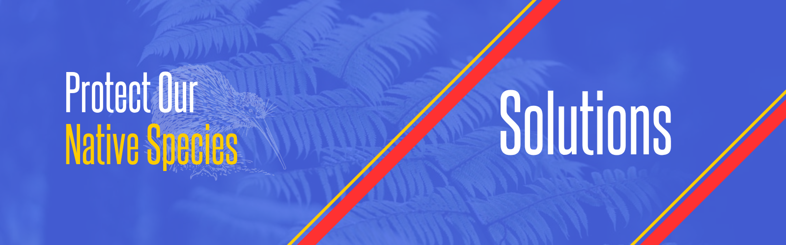

From predator-free initiatives to habitat restoration and community-led conservation, discover the strategies making a real difference. Learn how science, policy, and everyday actions are helping preserve the biodiversity that makes New Zealand unique—and how you can be part of the solution.
PONS NZ [Solutions]
Home
Impact
Statistics
Solutions
Contact Us
